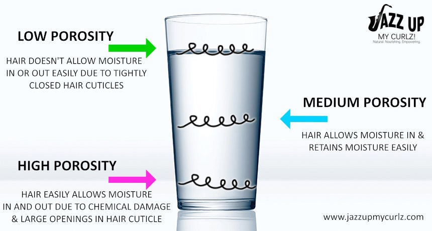
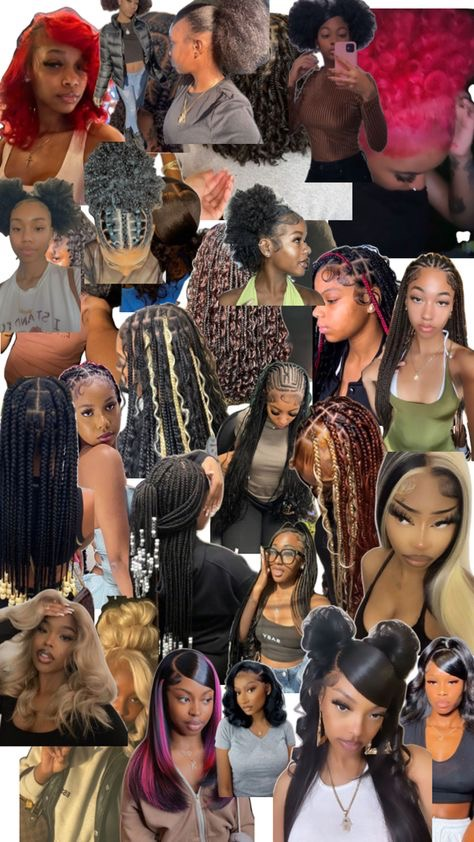

Foreword from Author
The topic of hair has always been an important and integral part to the Black identity. From slavery to modern day, hair holds history, memories, tradition and trauma for many Black Americans. For some, hair is just hair. For Black America, hair has been a symbol of pain and tragedy, as well as strength and liberation.
Origin and History
So where did the importance of hair in the Black community begin? The topic stems from slavery, naturally. After being taken from Africa and brought to the Americas, one of the first things to happen to slaves was having their heads shaved. While this may seem obscure, it was a way for slavetraders to not only degrade African men and women, but also erase an important part of their identities. In an attempt to escape captivity, slaves often braided maps of plantations into each others' hair, as well as grain of rice and seeds for when they started their new lives as free.
As the years went by, Black Americans were still heavily persecuted for their hair. Blsck men, women and children were often forced or taught to assimilate to Eurocentric hairstyles in order to seem more likeable, and to keep from persecution. Hair was made straight to eliminate curls,roduct was used to keep things slick and "neat", and laws such as the Tignon Laws passed in Louisiana in the late 1700s forced women to cover their heads. Problems such has these have not full been eradicated, however. There have been numerous news stories about hair discrimination in the workplace, in schools and in everyday life. For example, in 2021, ABC 7 Chicago reported on the tragic story of high school student Nicole Pyles, a softball player at North Carolina's Durham Hillside High School who was forced by sports officials to take beads out of her braids because the opposing team couldnt read her jersey number. Because they were so tightly woven into her hair, her and her teammates had to resort to cutting some of the hair out. Pyles said the incident left her feeling "dehumanized".
According to allthingshair.com, Black women experience more "hair anxiety" than other women. Another statistic on the page says that 1 in 5 b;ack women feel social pressure to straighten their hair when it's time to go to work, which is reportedly twice as many as their white counterparts.
According to nielseniq.com, Black consumers spent $9.4 billion on beauty products in 2023. While this isn't limited to only hair, the average montly expenses for textured hair care products is around $54 per month. It may not seem like a lot of money on the surface, but one has to keep in mind how quicky Black Americans run through hair products, as well as how much textured hair products are priced currently due to the genetic differences between textured hair and traditional straight or wavy hair.
Hair Textures and What They Mean
- 1A-1C: Usualy described a straight hair. As you go deeper from A to C, the hair seems to become slighting bendier or curlier, but category 1 is still described as straight hair. This is usaully the hair you would see on women of Asian descent, according to Onyc Hair. Onyc Hair also described this as the most finely textured and rarest hair texture of all. *Remember, hair texture is heavily based on DNA and genetics. For example, just because you are Black doesn't mean you can't be born with bone-straight hair. The same goes for white women with naturally springy curls.
- 2A: This hair seems more straight than wavy, but it has a slight bend to it.
- 2B: This hair has a noticeable bend without being considered curly. This is what we consider "wavy" or "wavier" hair.
- 2C: This is true wavy hair.
- 3A: This hair texture is where we get into an actual curl. Throughout some parts of the Black community, this is known as "mixed" hair, or "good" hair due to the way it is curly but still able to be long or malleable. Truthfully, all Black hair is good hair.
- 3B: The curl starts to become a bit closer together, while still maintaining a curl-like shape.
- 3C: the curl becomes tighter again, and/or "springy" looking.
- 4A: This is where the curl becomes tighter in shape, resulting in a definitively springy look.
- 4B: The curl tightens again, making a sort of zig-zag that just means locks together and more closely.
- 4C: The tightest texture you can have, which is typically described as "coily". It may look "frizzy" but the curl itself is so tightly defined that it may be hard to differentiate from frizzy and just extremely tight.
Summary of textures:
Category 1 is usually reserved for straight hair.
Category 2 is reserved for straight to wavy hair.
Category 3 is mainly curls, while Category 4 is reserved for coils.
Black Childhood: Hair Accessories and Tools
There are some things that are unique to the childhoods of black children. Whether it's hair accessories, tools or styles, there's usually something that al African American children can relate to. Things such as bumped ends when getting your hair straightened, braids or twists with ballies or beads put in, holding your ear down when a hot tool is near, or even deep conditioning with a plastic bag around your head.
Hair can be separated into different porosity levels. According to the New York Society of Cosmetic Chemists, hair porosity is the extent to which hair absorbs and retains warer, products and haircare treatments based on the integrity of the cuticle.
Protective Hairstyles
A very big part of the Black community when it comes to hair is protective hairstyles. Protective styles are hairstles that protect hair from damage, promote growth. One of the most notable protective styles are cornrows, also known to other parts of the world as "canerows". Named from when slaves parted and braided their hair akin to the rows of crops on plantations, cornrows are often seen as a protective style that most noticeable is put in before adding hair extensions or a wig. This is to protect natural hair underneath of fake or added hair so that things like glue won't damage it.
Other notable protective hairstyles can be called multiple different named, and spruced up by adding hair jewelry, such as beads, or extra pieces of hair that curl and frame the face outside of them. Styles like box braids, bantu knots, faux locs, fades, wicks and Senegalese twists are common for Black people. While these are not the only protective hairstyles, they are some of the most common. Protective styles also include wigs (synthetic or human, alsothough synthetic is cheaper adn tends to get knotted more easily while human hair is made from different ethnic groups all around the world like Malaysian or Indian), quick weaves such as sew-ins or glue-ins (in which you braids the natural hair, cover it with a stocking cap and glue or sew in hair tracks), etc.
Hairstyles can often be unique by accessories, parting, braiding styles or color! But then comes the age-old question...
Can white people or people from other ethnic backgrounds wear braids or other protective hairstyles?
And the answer is...yes and no. While hair can just be hair to some people, it is important to understand the history of where styles come from if they aren't traditional to your culture. It is also important to understand what kind of styles are healthy for your hair. Black people wouldn't usually recommend dreadlocks or box braids for white hair due to the genetic differences. Because hair is curly or coily, braids are often tight against the scalp for protection, and that makes the braids much easier to grip and stay in longer. If the same strength is applied to someone with a looser or thinner hair texture, it can cause hair loss, scalp itching or tearing, and even matting.
At the end of the day, you can't police people on how they wear their hair. But knowing the cultural impact and protective reasons black americans wear protective styles and being mindful about it when getting your hair done is always important. Hair is a sensitive topic for numerous reasons; it isn't soleley about changing your style when it comes to Black people all around the world. There is deep-rooted history when it comes to hairstyles which has a significant impact. The conversation isn't new, but many differing opinions ahve floated around for decades, especially when it comes to cultural appropriation.